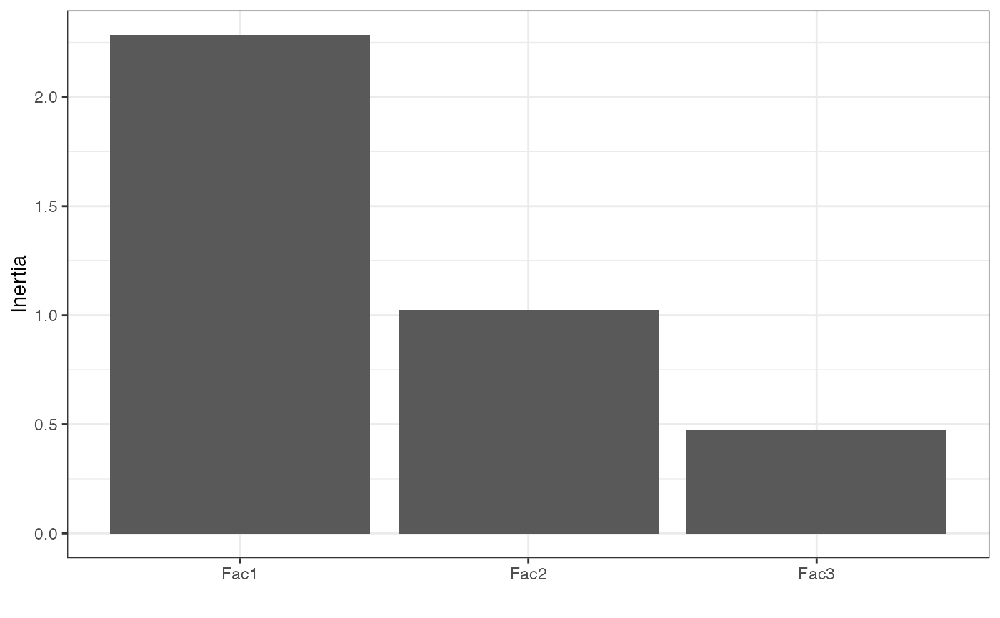
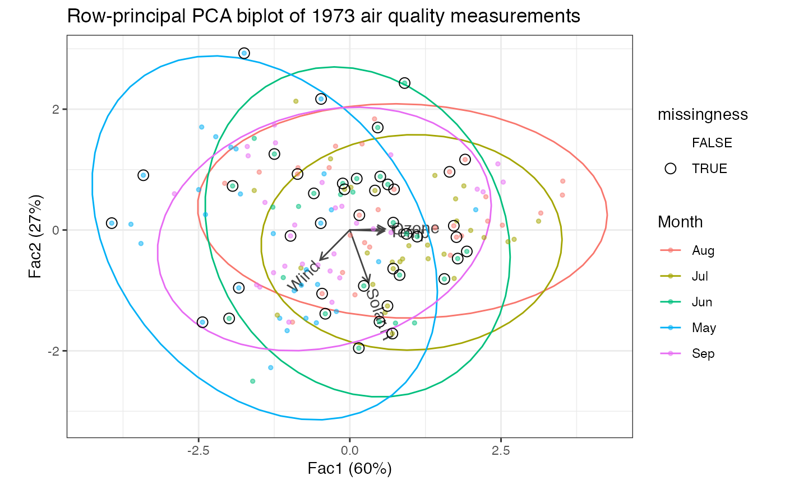

methods-ade4.RdThese methods extract data from, and attribute new data to,
objects of class "nipals" as returned by ade4::nipals().
# S3 method for nipals
as_tbl_ord(x)
# S3 method for nipals
recover_rows(x)
# S3 method for nipals
recover_cols(x)
# S3 method for nipals
recover_inertia(x)
# S3 method for nipals
recover_coord(x)
# S3 method for nipals
recover_conference(x)
# S3 method for nipals
augmentation_rows(x)
# S3 method for nipals
augmentation_cols(x)
# S3 method for nipals
augmentation_coord(x)An ordination object.
# incomplete air quality measurements from New York
class(airquality)
#> [1] "data.frame"
head(airquality)
#> Ozone Solar.R Wind Temp Month Day
#> 1 41 190 7.4 67 5 1
#> 2 36 118 8.0 72 5 2
#> 3 12 149 12.6 74 5 3
#> 4 18 313 11.5 62 5 4
#> 5 NA NA 14.3 56 5 5
#> 6 28 NA 14.9 66 5 6
# single date variable
airquality %>%
transform(Date = as.Date(paste("1973", Month, Day, sep = "-"))) %>%
subset(select = -c(Month, Day)) ->
air_quality
# NIPALS on air quality measures
air_quality[, seq(4L)] %>%
ade4::nipals(nf = 3L) %>%
as_tbl_ord() %>%
print() -> air_nipals
#> # A tbl_ord of class 'nipals': (153 x 3) x (4 x 3)'
#> # 3 coordinates: Fac1, Fac2, Fac3
#> #
#> # Rows (principal): [ 153 x 3 | 0 ]
#> Fac1 Fac2 Fac3 |
#> |
#> 1 -0.305 0.334 -1.25 |
#> 2 -0.426 0.930 -0.501 |
#> 3 -1.27 -0.0592 0.279 |
#> 4 -1.16 -1.46 -1.44 |
#> 5 -3.41 0.906 -0.280 |
#>
#> #
#> # Columns (standard): [ 4 x 3 | 0 ]
#> Fac1 Fac2 Fac3 |
#> |
#> 1 0.582 0.0175 0.104 |
#> 2 0.312 -0.867 -0.374 |
#> 3 -0.491 -0.497 0.623 |
#> 4 0.569 -0.0173 0.679 |
# summarize ordination
glance(air_nipals)
#> # A tibble: 1 × 7
#> rank n.row n.col inertia prop.var.1 prop.var.2 class
#> <int> <int> <int> <dbl> <dbl> <dbl> <chr>
#> 1 3 153 4 3.78 0.604 0.271 nipals
# bind dates and missingness flags to observation coordinates
air_nipals %>%
cbind_rows(air_quality[, 5L, drop = FALSE]) %>%
mutate_rows(missingness = apply(is.na(air_quality[, 1:4]), 1L, any)) ->
air_nipals
# by default, inertia is conferred to rows
get_conference(air_nipals)
#> [1] 1 0
# recover observation principal coordinates and measurement standard coordinates
head(get_rows(air_nipals))
#> Fac1 Fac2 Fac3
#> 1 -0.3046578 0.33404772 -1.25185277
#> 2 -0.4257363 0.92995118 -0.50109418
#> 3 -1.2653348 -0.05924552 0.27933440
#> 4 -1.1591231 -1.46052350 -1.44006014
#> 5 -3.4139264 0.90645780 -0.28037574
#> 6 -1.8355293 -0.95774016 -0.08185937
get_cols(air_nipals)
#> Fac1 Fac2 Fac3
#> Ozone 0.5819820 0.01746014 0.1036609
#> Solar.R 0.3117510 -0.86735944 -0.3740939
#> Wind -0.4905363 -0.49707595 0.6228377
#> Temp 0.5687552 -0.01727006 0.6792506
# augment measurements with names and scaling parameters
augment_ord(air_nipals)
#> # A tbl_ord of class 'nipals': (153 x 3) x (4 x 3)'
#> # 3 coordinates: Fac1, Fac2, Fac3
#> #
#> # Rows (principal): [ 153 x 3 | 3 ]
#> Fac1 Fac2 Fac3 | .name Date missingness
#> | <chr> <date> <lgl>
#> 1 -0.305 0.334 -1.25 | 1 1 1973-05-01 FALSE
#> 2 -0.426 0.930 -0.501 | 2 2 1973-05-02 FALSE
#> 3 -1.27 -0.0592 0.279 | 3 3 1973-05-03 FALSE
#> 4 -1.16 -1.46 -1.44 | 4 4 1973-05-04 FALSE
#> 5 -3.41 0.906 -0.280 | 5 5 1973-05-05 TRUE
#> # … with 148 more rows
#> #
#> # Columns (standard): [ 4 x 3 | 1 ]
#> Fac1 Fac2 Fac3 | .name
#> | <chr>
#> 1 0.582 0.0175 0.104 | 1 Ozone
#> 2 0.312 -0.867 -0.374 | 2 Solar.R
#> 3 -0.491 -0.497 0.623 | 3 Wind
#> 4 0.569 -0.0173 0.679 | 4 Temp
# summarize principal components
tidy(air_nipals)
#> # A tibble: 3 × 5
#> .name .eig .nb .inertia .prop_var
#> <fct> <dbl> <dbl> <dbl> <dbl>
#> 1 Fac1 2.28 11 2.28 0.604
#> 2 Fac2 1.02 18 1.02 0.271
#> 3 Fac3 0.472 20 0.472 0.125
# scree plot of inertia
tidy(air_nipals) %>%
ggplot(aes(x = .name, y = .inertia)) +
theme_bw() +
geom_col() +
labs(x = "", y = "Inertia")

# fortification adds all above columns
fortify(air_nipals)
#> # A tibble: 157 × 6
#> Fac1 Fac2 Fac3 Date missingness .matrix
#> <dbl> <dbl> <dbl> <date> <lgl> <chr>
#> 1 -0.305 0.334 -1.25 1973-05-01 FALSE rows
#> 2 -0.426 0.930 -0.501 1973-05-02 FALSE rows
#> 3 -1.27 -0.0592 0.279 1973-05-03 FALSE rows
#> 4 -1.16 -1.46 -1.44 1973-05-04 FALSE rows
#> 5 -3.41 0.906 -0.280 1973-05-05 TRUE rows
#> 6 -1.84 -0.958 -0.0819 1973-05-06 TRUE rows
#> 7 -0.533 -0.901 -1.68 1973-05-07 FALSE rows
#> 8 -2.39 0.256 -0.331 1973-05-08 FALSE rows
#> 9 -3.62 0.0954 1.26 1973-05-09 FALSE rows
#> 10 -0.481 0.113 -0.942 1973-05-10 TRUE rows
#> # … with 147 more rows
# row-principal biplot with monthly ellipses
air_nipals %>%
augment_ord() %>%
ggbiplot() +
theme_bw() +
geom_cols_vector(color = "#444444") +
geom_cols_text_radiate(aes(label = .name), color = "#444444") +
stat_rows_ellipse(aes(color = format(Date, "%b"))) +
geom_rows_point(aes(color = format(Date, "%b")), size = 1, alpha = .5) +
geom_rows_point(aes(shape = missingness), size = 3) +
scale_shape_manual(values = c(`TRUE` = 1L, `FALSE` = NA)) +
ggtitle("Row-principal PCA biplot of 1973 air quality measurements") +
labs(color = "Month")
#> Warning: Removed 111 rows containing missing values (geom_point).
